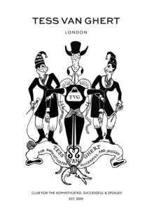

Trade Mark Journal No.2025/025 20 June 2025
UK00004204399 15 May 2025 (14,18)

- Class 14
- Jewellery; Necklaces [jewellery]; Brooches [jewellery]; Jewellery brooches; Jewellery, including imitation jewellery and plastic jewellery; Pendants [jewellery]; Bracelets [jewellery]; Brooches [jewellery, jewelry (Am.)]; Pearls [jewellery]; Trinkets [jewellery]; Necklaces [jewellery, jewelry (Am.)]; Fashion jewellery; Jewelry; Gold jewellery; Lockets [jewellery]; Brooches [jewelry]; Jewelry brooches; Brooches being jewelry; Jade [jewellery]; Clasps for jewellery; Charms [jewellery]; Charms for jewellery; Jewellery charms; Enamelled jewellery; Pearls [jewellery, jewelry (Am.)]; Ornaments [jewellery, jewelry (Am.)]; Costume jewellery; Items of jewellery; Jewellery items; Rings being jewellery; Rings [jewellery]; Trinkets [jewellery, jewelry (Am.)]; Bracelets [jewellery, jewelry (Am.)]; Jewellery stones; Wristlets [jewellery]; Jewellery products; Rings [jewellery, jewelry (Am.)]; Precious jewellery; Crucifixes as jewellery; Necklaces [jewelry]; Pins [jewellery, jewelry (Am.)]; Jewellery chains; Chains [jewellery]; Jewellery chain; Jewellery in semi-precious metals; Jewellery caskets; Gold plated brooches [jewellery]; Jewellery for personal adornment; Pendants [jewelry]; Imitation jewellery; Jewellery chain of precious metal for necklaces; Cabochons for making jewellery; Body jewellery; Beads for making jewellery; Gold thread [jewellery, jewelry (Am.)]; Jewelry (Paste -) [costume jewelry]; Silver thread [jewellery, jewelry (Am.)]; Personal jewellery; Jewellery in non-precious metals; Jewellery incorporating diamonds; Jewellery for pets; Hat jewellery; Facial jewellery; Jewellery in the form of beads; Jewellery incorporating pearls; Jewellery articles; Articles of jewellery; Jewellery made from gold; Jewellery made from silver; Diamond jewelry; Jewellery containing gold; Clasps for jewelry; Jewellery of precious metals; Jewellery for personal wear; Body costume jewellery; Charms [jewelry]; Jewelry charms; Charms for jewelry; Jewellery fashioned of semi-precious stones.
- Class 18
- Leather handbags; Leather purses; Handbags made of leather; Leather bags; Handbags; Leather wallets; Leather bags and wallets; Purses [leatherware]; Briefcases [leather goods]; Leather suitcases; Leather coin purses; Straps for handbags; Clutch purses [handbags]; Leather pouches; Handbags, purses and wallets; Leather shopping bags; Bags made of leather; Briefcases made of leather; Leather leashes; Clutch handbags; Fashion handbags; Handbags for ladies; Ladies handbags; Belts (Leather shoulder -); Pocketbooks [handbags]; Travelling bags made of leather; Handbags for men; Handbag straps; Shoulder belts [straps] of leather.
Tess Van Ghert London Limited